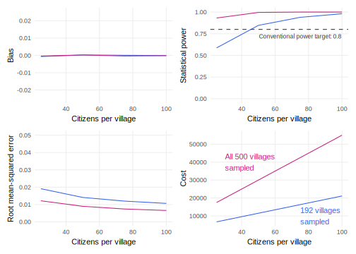

model_12.1 <-
declare_model(
villages = add_level(N = 660, U_village = rnorm(N, sd = 0.1)),
citizens = add_level(
N = 100,
U_citizen = rnorm(N),
potential_outcomes(
Y ~ pnorm(
U_citizen + U_village +
0.10 * (Z == "personal") +
0.15 * (Z == "social")),
conditions = list(Z = c("neutral", "personal", "social"))
)
)
)12 Design example
We illustrate the declare-diagnose-redesign framework with a study of political motivations among office-seekers in Pakistan. Gulzar and Khan (2021) conducted an experiment that estimated the effects of two alternative incentives for becoming a politician: helping the community or generating personal benefits. The researchers randomly assigned eligible citizens to receive different encouragements to stand for office and measured the rates of running for office, the types of people who chose to run, and the congruence of elected politicians’ policy positions with those of the general population.
By contrast with the stylized designs we’ve described to this point in the book, this design is moderately complex. We have multiple inquiries and a layered data strategy that has important implications for the answer strategy. The reason we selected it is that we want to show how one would actually apply the declare-diagnose-redesign framework in a complex, real world setting.
12.1 Declaration in words
The model describes the units under study: citizens who are eligible to run for office in villages in the study region. The model also includes citizens’ individual characteristics and their potential outcomes depending on which encouragement they receive. The model set includes four theories of political motivation: politicians respond only to encouragements that focus on themselves, only to encouragements that focus on others, to neither, or to both. Among theories that include room for both motivations, some claim that personal motivations are more powerful than community-minded motivations, while others claim the reverse. The potential outcomes are defined in terms of subjects’ underlying (“latent”) probability of running for office, which is tightly related to the binary choice to run or not to run.
The two inquiries for this study are the average treatment effects of each encouragement, defined as the average difference in potential outcomes between receiving and not receiving each encouragement to run. The authors consider a third inquiry — the difference between these two average treatment effects — but we’ll leave that complication to the side for the moment. It’s worth highlighting what the inquiry is not. The inquiry is not “why” do actual politicians run for office or what are the features of the job that attract candidates. The answers to the average treatment effect inquiries may shed light onto those questions, but not directly.
The data strategy for this study includes sampling, treatment assignment, and measurement. The sampling step takes place in two stages. First, the researchers sample 192 villages and then they sample 48 citizens who are eligible to stand for election from each village. In the assignment step, the authors allocate participants to a personal benefits encouragement, a prosocial encouragement, or no encouragement (control). All eligible citizen in a village are assigned to the same treatment condition, which is to say that this experiment used cluster random assignment. Lastly, in the measurement step, the authors record the decision to run for office by checking whether a participant’s name appears on the official candidate lists released by the Election Commission of Pakistan. In contrast to the latent probability outcome in the model, the outcome variable as measured by the data strategy is binary.
The answer strategy is an ordinary least squares regression of outcome variable on the treatment variable, with standard errors clustered at the village level. The clustering of the errors reflects the clustered assignment of treatments. This mirroring is an example of how choices in the answer strategy should reflect choices in the data strategy.
12.2 Declaration in code
Declaration 12.1 Gulzar and Khan (2021) design
With declare_model, we describe a hierarchical structure with 660 villages, each of which is home to many citizens who are eligible to run for elected office. Each citizen harbors three potential outcomes. Y_Z_neutral is the citizen’s latent probability of standing for election if treated with a neutral appeal, Y_Z_personal is the probability if treated with an appeal that emphasizes the personal returns to office, and Y_Z_social is the probability if treated with an appeal that underlines the benefits to the community. Our simplified model assumes a constant treatment effect of about 3 percentage points for the personal appeal and 4 percentage points for the social appeal.1
We have two inquiries, representing the average treatment effects in the population for the personal and social appeals compared to the neutral appeal, defined as the average differences in potential outcomes:
The data strategy consists of four steps: sampling of villages, sampling of citizens, treatment assignment, and outcome measurement. In sampling, we sample 192 villages and 48 of the eligible citizens from each village. In assignment, we cluster assign 25% of the villages to the neutral condition, 37.5% to the personal appeal, and 37.5% to the social appeal. The measurement step maps the “revealed,” but still latent, probability of running to the observed binary choice to run or not.
n_villages <- 192
citizens_per_village <- 48
data_strategy_12.1 <-
declare_sampling(
S_village = cluster_rs(clusters = villages, n = n_villages),
filter = S_village == 1) +
declare_sampling(
S_citizen = strata_rs(strata = villages, n = citizens_per_village),
filter = S_citizen == 1) +
declare_assignment(
Z = cluster_ra(
clusters = villages,
conditions = c("neutral", "personal", "social"),
prob_each = c(0.250, 0.375, 0.375))) +
declare_measurement(
Y_latent = reveal_outcomes(Y ~ Z),
Y_observed = rbinom(N, 1, prob = Y_latent)
)The answer strategy consists of an ordinary least squares regression (as implemented by lm_robust) of the outcome on the treatments. The standard errors are clustered at the village level in order to account for the clustering in the assignment procedure. The regression will return three coefficients: an intercept and two treatment effect estimates. We ensure that the estimators are mapped to the relevant inquiries by explicitly linking them.
When we concatenate all four elements with the + operator, we get a design:
declaration_12.1 <- model_12.1 + inquiry_12.1 + data_strategy_12.1 + answer_strategy_12.1\(~\)
12.3 Diagnosis
To diagnose the design, we first define a set of diagnosands: bias, statistical power, the root mean-squared error, and total cost. The total cost calculation is in an arbitrary unit and reflects an assumption that sampling an additional village incurs a cost that is ten times larger than the cost of sampling an additional subject within a village.
We then diagnose the design by simulating the design over and over, then calculating the diagnosands based on simulations data.
Diagnosis 12.1 Diagnosis of Gulzar and Khan (2022)
diagnosis_12.1 <- diagnose_design(declaration_12.1, diagnosands = diagnosands)| inquiry | term | bias | rmse | power |
|---|---|---|---|---|
| ATE_personal | Zpersonal | 0 | 0.014 | 0.482 |
| ATE_social | Zsocial | 0 | 0.014 | 0.839 |
The diagnosis reveals that the design is unbiased for both inquiries. The power of the design for the the social treatment is above the standard 80% threshold but it is not for the personal treatment. The table gives us a sense of what effect sizes the design is powered for, since the only difference in the design between these two inquiries is the assumed effect size in the model.
12.4 Redesign
Two of the most important design decisions in this study are the number of sampled villages and the number of sampled citizens per village. Due to the large fixed costs of traveling to each village, an additional sampled village is more expensive than an additional sampled citizen. In order to best allocate constrained study resources, we need understand the gains from changes to the data strategy along each margin. Here, we redesign the study across possible combinations of numbers of villages and citizens per village.
Diagnosis 12.2 Diagnosis of redesigned Gulzar and Khan (2022)
In Figure 12.1, we illustrate the results of our redesign exercise across all four diagnosands. The number of citizens per village is plotted on the horizontal axis and the value of the diagnosand is shown on the vertical axis. The plot is faceted by diagnosand and each line represents a different possible number of villages. We focus here on the social treatment only.

What we see is that bias is invariant to these choices. The study is unbiased regardless of the number of villages and the number of citizens interviewed per village. However, our other three diagnosands do change. Power is increasing in the number of citizens per village, and is always higher with more villages. We might reject designs with 192 villages with only 25 citizens per village, because they fall below the 80% power threshold (in fact, the number chosen by the researchers, 48, is just over the threshold, suggesting they chose the most cost-effective design in terms of power). Root mean-squared error, a measure capturing both bias and efficiency of the design, is improving (decreasing) in the number of citizens per village and the number of villages. Cost is, of course, increasing in both sample size parameters. We can use the cost parameters to make decisions about what sample sizes to choose accounting both for scientific diagnosands of the design (i.e., power) and cost at the same time.
Readers may wonder where 3 and 4 percentage points are declared in the code. We use the
pnormfunction to define a latent variable representing the potential to run for office. The measured our binary outcomeY_observedsprings from this latent outcomeY_latent. The effect sizes of 0.10 and 0.15 in the latent outcome translate in this setting to 3 and 4 percentage point effects on a binary scale. See Section 13.1.2 for further discussion.↩︎